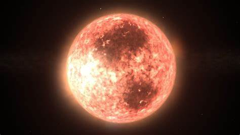

| NO. | CARACTERISTICAS |
|---|
| 1 | TEMPERATURA SUPERFICIAL: Las estrellas de tipo M tienen temperaturas superficiales que oscilan entre aproximadamente 2,400 y 3,900 Kelvin. |  |
| 2 | ESPECTRO:Su espectro está dominado por bandas moleculares, especialmente de óxidos como el óxido de titanio (TiO) y el óxido de vanadio (VO).También presentan líneas de absorción de hidrógeno (H) menos prominentes y líneas de metales neutros y moléculas. |
| 3 | COLOR:Son de color rojo o rojo-anaranjado, debido a su baja temperatura en comparación con estrellas más calientes. |
| 4 | BRILLO:Son las menos luminosas de las estrellas en la secuencia principal. Su magnitud absoluta varía, pero generalmente son mucho menos brillantes que el Sol y otras estrellas de tipos espectrales más calientes. |
| 5 | EJEMPLOS NOTABLES:Proxima Centauri (M5.5Ve), la estrella más cercana al Sol, en el sistema Alpha Centauri.Barnard's Star (M4Ve), conocida por su alta velocidad de movimiento propio.TRAPPIST-1 (M8V), famosa por su sistema de exoplanetas, varios de los cuales se encuentran en la zona habitable. |
| 6 | CICLO DE VIDA:Las estrellas de tipo M tienen vidas extremadamente largas, mucho más largas que las del Sol, debido a su baja masa y tasa de fusión nuclear. Pueden vivir cientos de miles de millones de años, mucho más que la edad actual del universo.Permanecen en la secuencia principal durante la mayor parte de su vida y evolucionan muy lentamente. |